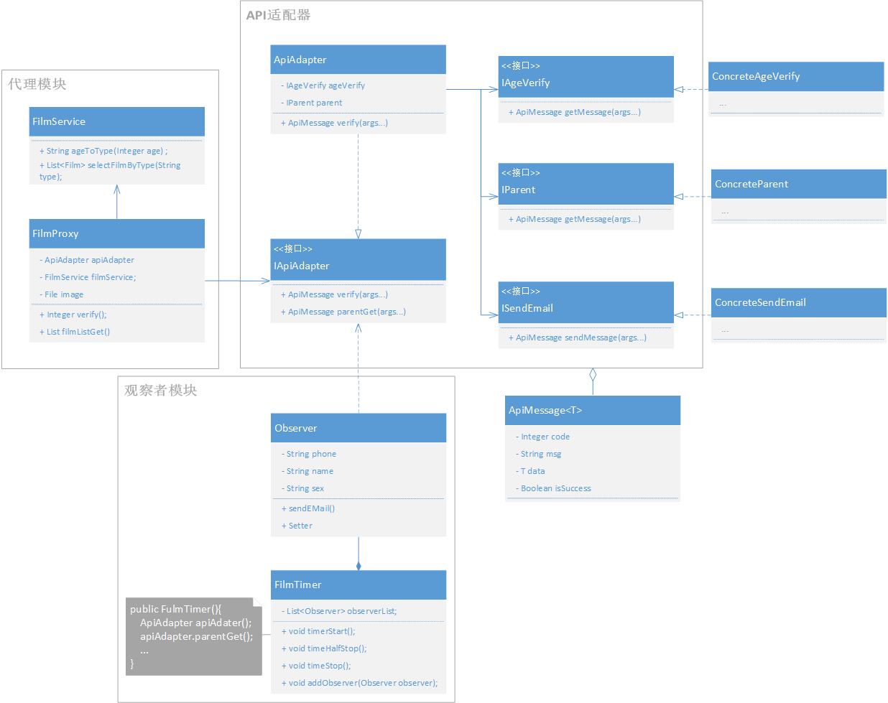
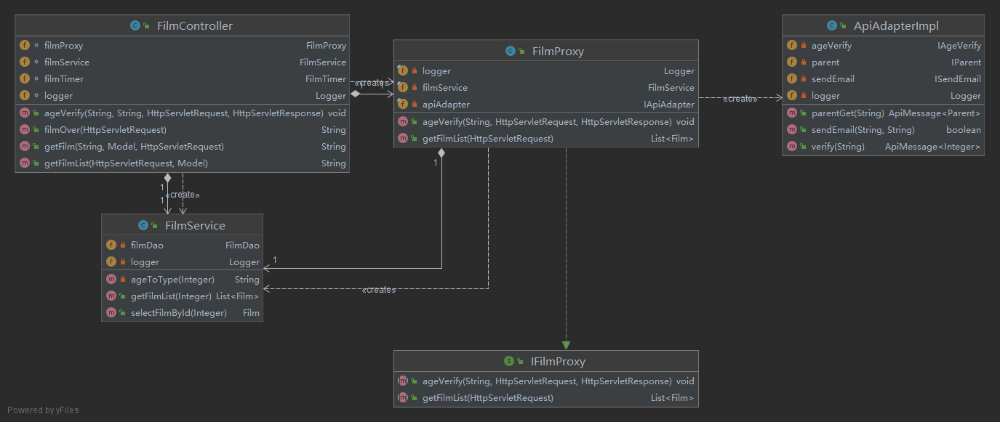
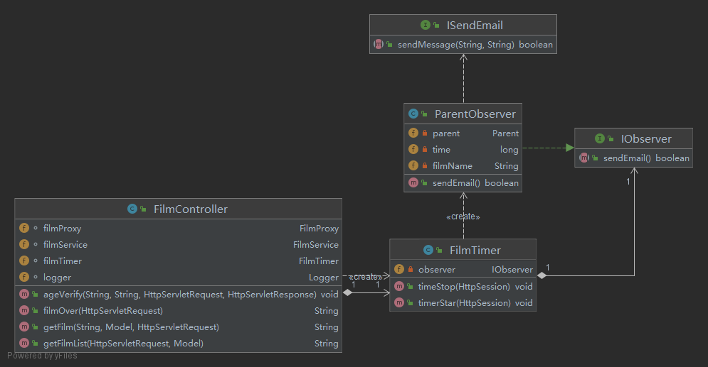

2020144131 20软件1 汪亦涵
现有客户需求完成一个影视播放APP，能够提供大量免费影视的移动播放功能，具体需求如下：
(1) 12岁以下儿童只能看动画片，并且观看影片名字和观看时长发给其监护人（如父母）；
(2) 13-18岁可观看所有影片，观看时长发给其监护人；
(3) 18岁以上无任何限制；
(4) 年龄等信息通过人脸识别完成；
(5) 监护人信息通过第三方接口完成，如户籍系统提供的接口等。
项目架构师分析认为，可通过代理模式、观察者模式、适配器模式联用完成相关设计，现请你：
（1）完成相关类图设计（类名采用相关英文单词）；
（2）完成相应代码并测试；
（3）年龄、影片类型可变动；
要求：设计具有可复用性、可扩展性。
代理模式
后端去限制用户访问，再题目中提到，要限制12岁以下人群访问普通电影，故在此处应当进行代理，同时为了减少前端请求次数，实现一次请求完成复数个服务，故利用代理统筹api和数据库服务，增强用户体验。
观察者模式
要求中提到，18岁以下人群需要向家长发送信息，符合发布-订阅模式即观察者模式，故被观察者为电影事件（包含观影事件，影片名等属性），观察者为家长，当电影结束后，向家长发布通知
适配器模式
要求中提到，系统中需要外部接口来提供人脸识别年龄、监护人户籍请求、信息发送等服务，显然是本系统难以做到的，故需要请求第三方接口，但由于第三方接口的不稳定性，导致可能会经常性的替换接口，对应的传输数据格式也会随之变换，此处采用数据库模式，防止接口的变换引起代码的修改。



-- filmSystem
|-- adapter 适配器模块核心类
|-- components 适配器组件
|-- config 项目配置（年龄分级等）
|-- controller 控制层 与前端交互
|-- dao Dao层 控制数据库
|-- mock Mock层 做假数据，充当假的api和数据库角色
|-- apiMock 充当api
|-- dbMock 充当数据库
|-- model 模型层 存放bean
|-- observe 观察者模块核心类
|-- proxy 代理模块核心类
|-- service 服务层 集成Dao
|-- test 测试模块 存放测试类
git项目后，通过maven安装相应模块。
启动后访问 http://127.0.0.1:8080
希望修改年龄请于filmSystem.mock.apiMock.AgeVerifyMock
适配器模式
为每个第三方接口，以及适配器定义了接口层，只要实现接口层，即可实现替换，同时规范了数据传输的格式ApiMessage，同时采用了泛型保证了apiMessage的灵活性
观察者模式
被观察者FilmTimer的作用是计算观影时间并发布通知，它不应当去关心被发布通知给怎样的人，故设计了IOberServer，所有实现了该接口的实体类都可以被FilmTimer订阅并发布
MVC模式
整体采用MVC模式编写，事务细粒度较高，耦合度低，方便代码的维护于拓展